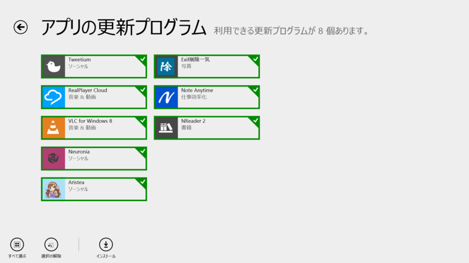
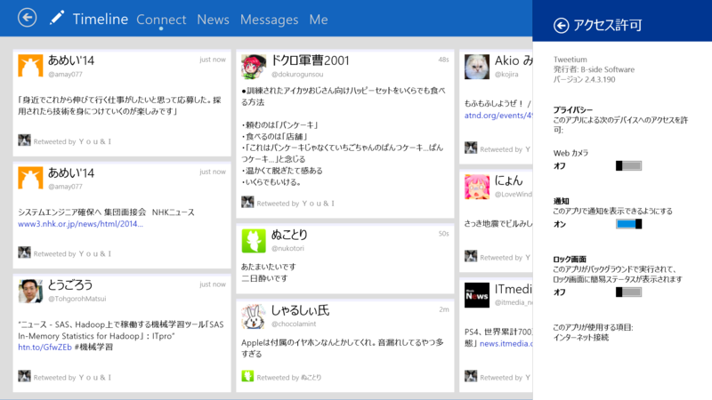
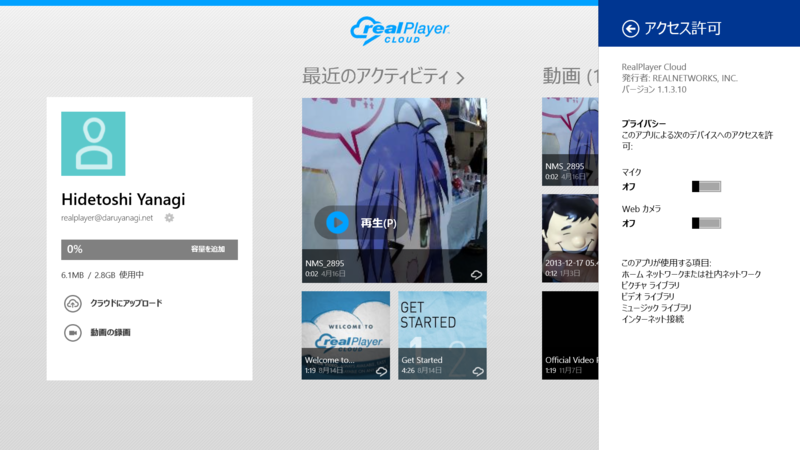
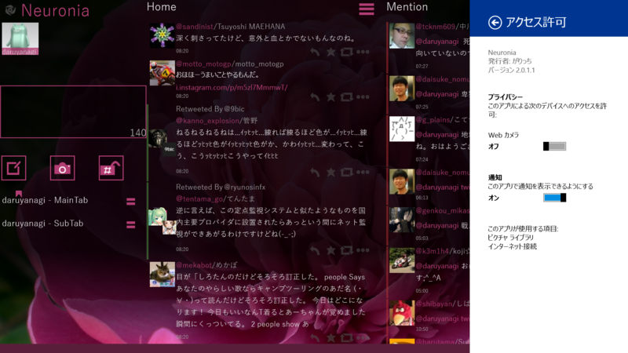
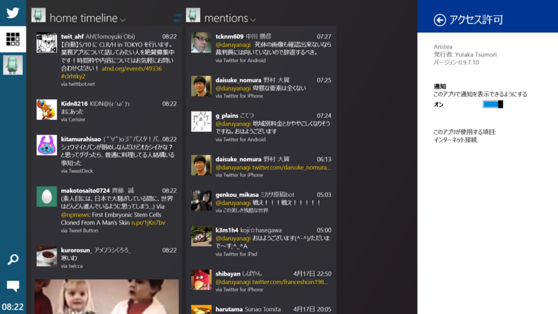
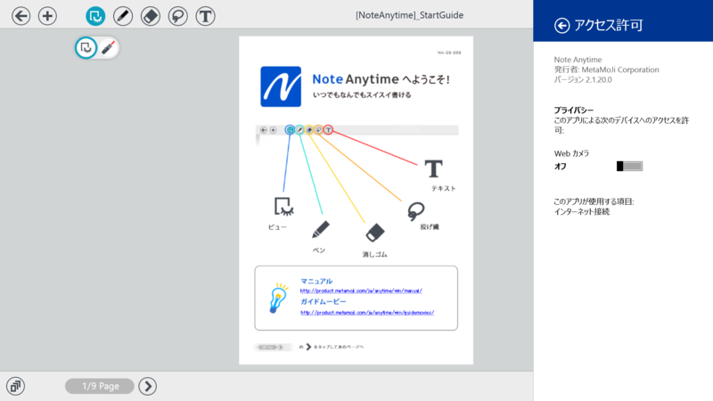
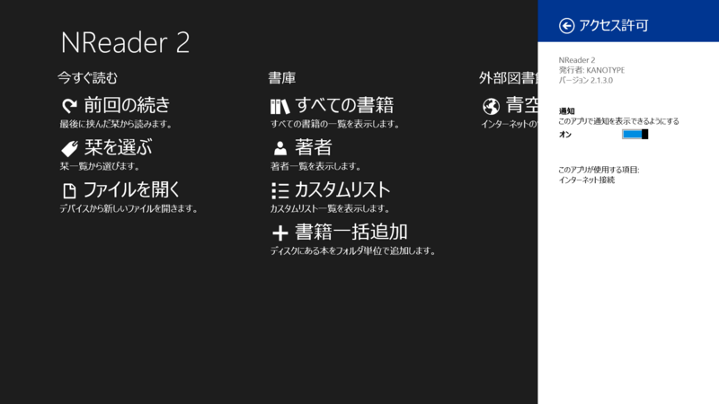

Tweetium 2.4.3.190、RealPlayer Cloud 1.1.310、VLC for Windows 8 0.0.5.0、Neuronia 2.0.1.1、Aristea 0.9.7.10、Note Anytime 2.1.20.0、NReader 2 2.1.3.0
公開日：

Tweetium 2.4.3.190

v2.4.3
Windows ストア の Windows 用 Tweetium アプリ
- Additional improvements to launch-from-toast behaviors
- Fixed a couple of rare crashing bugs
- Fixed a username autocomplete issue for multi-line tweets
RealPlayer Cloud 1.1.310

Changes in 1.1.3.10 >
NEW :
- Sharing allow up to 20 minutes per video.
FIXED :
- Japanese web video playback
Send us your feedback at help.win8@real.com
ユーザーインターフェイスも変わった気がする。なんかイマイチ信用できない点を除けば、割りといいアプリなのかもしれない。
Neuronia 2.0.1.1

～Ver2.0.1.1更新内容～
ボタンデザインを変更しました～Ver2.0.1.0更新内容～
・起動バグを修正しました
・ツイートに対するコマンドボタンのデザインを変えました
・タブ切り替えのキーボードショートカットを追加しました
・テーマカラーを追加しました
Aristea 0.9.7.10

v0.9.7
- ダイレクトメッセージ、リストに対応しました
- アプリ内での通知に対応しました
- 検索ストリームに対応しました
- 下書きに対応しました
- 使いやすさを向上しました
- 動作速度を向上しました
- その他細かい不具合を修正しました
Note Anytime 2.1.20.0

[2.1.20]
・いくつかの問題を修正[2.1.2]
・Windows 8.1対応（Windows 8.0には導入できません）
・可変長サイズのスナップに対応
・PDF読み込みの解像度が向上
・蛍光ペンの不透明度設定が可能に
・ナビゲーションバーでノートタイトルの変更が可能に
・ディテールウインドウの改行幅が、罫線比に加えてフレーム比で設定可能に
・書式バーから［文字背景色］が設定可能に
・テキストユニット内のカーソル位置の文字サイズを、書式バー上に表示
・その他、多数を改善
NReader 2 2.1.3.0

v2.1.3.0
修正: 書庫の保存場所を変更したとき、再起動まで反映されない問題を修正。
修正: その他のバグを修正。
たぶん今のところ最強の青空アプリ（無償）かもしれない。